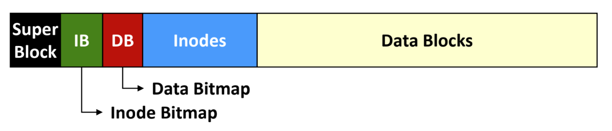

서울대학교 컴퓨터공학과 김진수 교수님의 "고급 운영체제" 강의를 필기한 내용입니다.
다소 잘못된 내용과 구어적 표현 이 포함되어 있을 수 있습니다.
Fast Filesystem, FFS
기존 UNIX 의 FS

- Superblock, inode list, data block 이 구별된 공간에 적재
- Superblock 은 FS 전체에 대한 메타데이터가 저장되는 곳
- 여기에 inode/data 를 위한 free block list 를 유지했다.
- Inode list 는 inode number 를 index 로 하여 하나의 inode 에 접근할 수 있게 하는 곳
- Data Block 은 실제 데이터가 저장되는 곳
- Inode 의 direct/indirect data block 을 이용해 알맞는 data block 에 접근
문제
- 첫번째 문제는 free block 들이 그냥 단순한 list (free block list) 로 관리된다는 점이다.
- Free block list 는 block 이 free 상태로 바뀐 순서에 따라 연결되지 block 이 물리적으로 근접한 것과는 아무런 상관이 없다.
- 즉, free block list 는 디스크 전역에 흩뿌려진 free block 을 무작위 순서로 보관하고 있는 셈.
- 하지만 접근하는 block 들이 물리적으로 가까워야 접근 속도도 빨라지는데 이러한 구조의 free block list 를 이용해 할당받은 하나의 파일에 대한 block 들은 물리적으로 흩뿌려져 있게 되므로 접근 속도가 오래걸린다.
- Free block list 는 block 이 free 상태로 바뀐 순서에 따라 연결되지 block 이 물리적으로 근접한 것과는 아무런 상관이 없다.
- 두번째 문제는 inode 공간과 data block 공간이 멀리 떨어져 있다는 것이다.
- 파일 path lookup 시간도너무
- 파일 path lookup 할 때를 생각해 보면 (directory inode -> directory data) -> 반복 -> file inode -> file data 으로 진행되는데
- Inode 와 data 가 물리적으로 멀리 있기 때문에 계속 왔다 갔다 해야돼서 (seek) 대역폭이 안나오게 되는 것.
- 얼마나 안좋았냐면 최대 대역폭의 2% 였다고 한다!
- 세번째 문제는 같은 디렉토리에 속한 파일들의 inode 도 별로 가깝게 위치하지 않는다는 것이다.
ls명령어를 한번 때리면 디렉토리를 통해 내부 파일의 inode number 와 이름들을 읽어오고, 이 inode number 들을 이용해 각 inode 에 들러 뭐 소유자나 권한 등을 보게 된다.- 즉, 이렇게 같은 디렉토리의 파일들에 대한 inode 들은 동시에 접근할 확률이 높다.
- 하지만 이 inode 들간의 거리가 멀기 때문에 또 seek time 이 늘어나고 대역폭 줄어들고 망했다 그냥
- 마지막으로는 block 의 사이즈가 512byte 로 너무 작더라.
해결
- 기존 UNIX FS 와 동일한 인터페이스를 제공하되, 장착되어있는 디스크의 특징을 최대한 사용해서 (Disk awareness) 내부 구현만 바꾸는 식으로 구현했고,
- 핵심 아이디어는 연관된 데이터 (같은 디렉토리 내의 inode 와 data 등) 을 유사한 위치 (즉, 이제 설명할 Cylinder Group) 에 넣어서 seek time 을 줄이는 것이다.
Inode/Data Bitmap

- Bitmap: Free block list 가 아니고 free inode/data block 을 bitmap 으로 관리해 (Inode Bitmap - IB, Data Bitmap - DB) 물리적으로 free block 이 어디에 있는지 인지할 수 있도록 해줌
Cylinder Group (CG)

- Cylinder Group (CG): 인접한 cylinder 의 모임 (즉, CG 내에서는 seek time 이 아주 적음)

- 이때, CG 하나를 마치 디스크 하나인 것 처럼 사용한다.
- 즉, CG 의 LBA 공간에 Superblock, IB (inode bitmap), DB (data bitmap), inode list, data block 가 다 들어 있다.
- 이렇게 하면 좋은 점이 기존 디스크 전체에 비해 단위의 크기가 줄어들기 때문에 inode-data block 간의 최대 거리가 짧아졌다는 것이고,
- 심지어 이 공간이 인접한 cylinder 에 있어 seek time 도 아주 짧아진다.
Block allocation policies
- 일단 한 디렉토리에 속하는 파일들은 일반적으로 같이 접근되니 같은 CG 에 넣는다.
- 같은 디렉토리 내의 inode 와 data block 모두
- 그리고 만약에 큰 파일의 경우에는 (어쩔 수 없이) 쪼개서 여러 CG 에 넣는다.
- 그리고 위의 성질에 따라 하나의 디렉토리에 데이터들이 많기 때문에, 각 디렉토리들은 최대한 다른 CG 에 흩뿌려놓는다.
- 따라서 새로운 디렉토리를 위한 CG 를 선정할 때에는, 디렉토리가 가장 적고 free block 이 가장 많은 CG 를 선택하게 된다.
Larger block, fragments
- 각 block 의 사이즈를 512byte 가 아닌 4Ki 로 늘렸다.
- 이에 따라 발생할 수 있는 internal fragmentation 을 방지하기 위해, 하나의 block 을 여러개로 나누는 Fragment 를 도입했다.
#draft 나머지 아래 항목들은 논문 읽으면서 정리하거라
- Free space reserve
- parameterize, rotationally optimum
성과
- 그래서 대역폭 사용량을 14% ~ 47% 까지 끌어올렸다고 한다.
- 이후에 등장하는 Ext4 와 같은 파일시스템의 디자인에 아주 지대한 영향을 끼쳤다고 하더라.